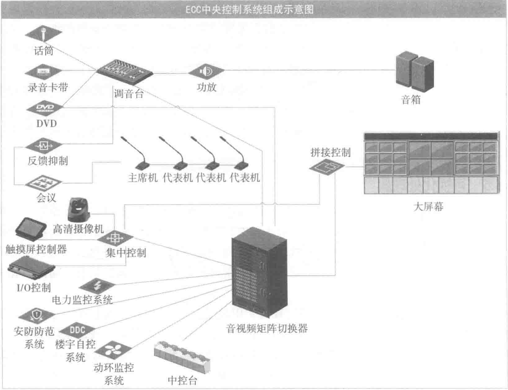

大屏幕显示系统主要由四个部分组成：拼接显示单元、拼接处理器、拼接接口设备和拼接软件。
拼接显示单元是由多块显示单元、拼接箱体和固定件组成。目前，比较常见的大屏幕拼接系统，根据显示单元的工作方式分为三个主要类型，即LCD显示单元拼接、PDP显示单元拼接和DLP背投显示单元拼接。其中前二者属于平板显示单元拼接系统，后者属于投影单元拼接系统。
LCD（Liquid Crystal Display）液晶显示器的构造是在两片平行的玻璃基板当中放置液晶盒，下基板玻璃上设置TFT（薄膜晶体管），上基板玻璃上设置彩色滤光片，通过TFT上的信号与电压改变来控制液晶分子呈现不同的光特性，从而达到显示目的。
按照背光源的不同，LCD可以分为CCFL（冷阴极荧光灯管）和LED（发光二极管）两种。其中，CCFL的优点是色彩表现好，不足在于功耗较高。LED的优点是体积小、功耗低，用LED作为背光源，可以在兼顾轻薄的同时达到较高的亮度，其缺点是色彩表现比CCFL差。
在ECC的应用中，对色彩还原的要求不高，考虑到LED作为背光源有厚度薄、重量轻、低能耗、长寿命、无辐射等特点，常选用LED背光源的LCD显示单元作为大屏幕的